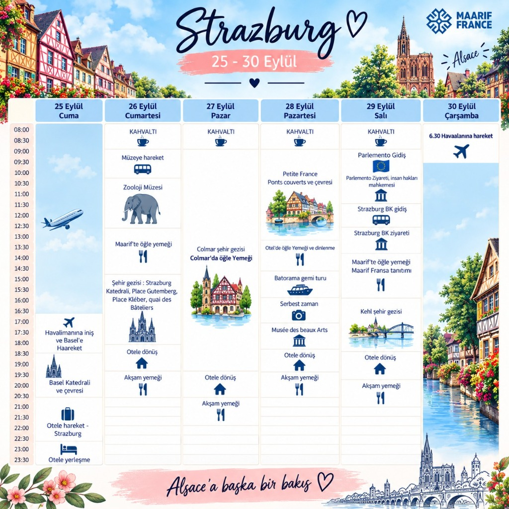

🏛️ Fransa Ansiklopedik Araştırma Atlası
Aydınlanma felsefesinden nükleer sanayiye, anayasal mimariden flânerie estetiğine 16 ana araştırma dosyası
Düşünce & Fikir Tarihi
Descartes, Voltaire, Rousseau, 1789 İhtilali, Varoluşçuluk (Sartre, Camus) ve Mayıs 68 hareketi.
Dossier'yi İncele →Devlet & Laïcité Modeli
5. Cumhuriyet, Yarı-Başkanlık, 1905 Laiklik Kanunu, Danıştay, Anayasa Konseyi ve MJC Gençlik Evleri.
Dossier'yi İncele →18 Düşünce ve Diplomasi Önderi
Kanuni, I. François, Çelebi Mehmed, Namık Kemal, Yahya Kemal, Cemil Meriç, Baudelaire ve De Gaulle.
Dossier'yi İncele →Sanat, Edebiyat & Roman
Molière, Victor Hugo, Marcel Proust, Flâneur estetiği, Empresyonizm ve çağdaş edebiyat ödülleri.
Dossier'yi İncele →Bilim, Enerji & French Tech
Messmer Planı (%70 Nükleer), Airbus/Uzay sanayisi, TGV demiryolları ve Mistral AI / Station F ekosistemi.
Dossier'yi İncele →Yaşam Sanatı & Argot / Verlan
L'art de vivre, UNESCO Gastronomi Mirası, kafe terasları, sokak dili, Verlan hece sistemi ve nezaket kodları.
Dossier'yi İncele →Türkiye-Fransa İlişkileri (500 Yıl)
1536 Kanuni-François ittifakından Tanzimat aydınlarına, Galatasaray geleneğine ve 2026 Gençlik Eylem Planı'na.
Dossier'yi İncele →500 Yıllık Diplomasi Kronolojisi
Kapitülasyonlar, Çelebi Mehmed Sefaretnamesi, Lozan, Hatay, 1968 De Gaulle ve modern gençlik diplomasisi.
Dossier'yi İncele →Fonetik, Sesbilim & Faux Amis
Burun ünlüleri (/ɑ̃/, /ɛ̃/, /ɔ̃/), boğaz R'si, ulamalar ve Türkçe-Fransızca yalancı eşdeğer kelimeler.
Dossier'yi İncele →Fiil Çekimleri & Diplomatik Gramer
Kritik düzensiz fiiller (être, avoir, pouvoir, vouloir), Conditionnel de politesse ve Subjonctif kullanımı.
Dossier'yi İncele →Saha Diyalogları & Rol Yapma
Restoran siparişi, resmi heyet tanışması, Station F sunumu, metro ve eczane durum senaryoları.
Dossier'yi İncele →Sosyolojik Görgü & Adab-ı Muaşeret
La Bise öpüşme kodları, masa kuralları, Vouvoiement nezaketi, randevu disiplini ve Türk-Fransız karşılaştırması.
Dossier'yi İncele →Büyük Fransız Şiiri Antolojisi
Baudelaire (L'Albatros), Rimbaud, Verlaine, Apollinaire (Pont Mirabeau), Paul Éluard (Liberté) ve Prévert.
Dossier'yi İncele →Gastronomi & Terroir Doktrini
1200+ peynir çeşidi (AOP), büyük şarap bağları, UNESCO geleneksel baget mirası ve Paul Bocuse mutfağı.
Dossier'yi İncele →İkili Gençlik Bildirisi Çerçevesi
Yeşil dönüşüm, yapay zekâ egemenliği, kardeş gençlik merkezleri ve Akdeniz barışı eylem maddeleri.
Dossier'yi İncele →Seyahat & Bütçe Kılavuzu
Euro/TL göstergeleri, Navigo kart kullanımı, bahşiş kuralları, priz tipleri ve acil durum protokolleri.
Dossier'yi İncele →Strazburg & Alsace Başkenti
Avrupa Parlamentosu, AİHM, Maarif France, Petite France, Colmar ve 25-30 Eylül gençlik değişim rotası.
Dossier'yi İncele →⏳ 500 Yıllık Türkiye - Fransa Diplomatik & Kültürel Zaman Tüneli
1536 Kanuni-François ittifakından 2026 GSB Gençlik Değişimi Programı'na yarım binyıllık ortak tarih
💬 Alıntılar, Aforizmalar & Entelektüel Düşünce Galerisi
Fransız düşünürler, Türk edebiyatçıları ve dünya aydınlarının Fransa, edebiyat, diplomasi ve sanat üzerine sözleri
👥 Türk ve Fransız Düşünce & Diplomasi Önderleri
500 yıllık etkileşimi inşa eden padişahlar, krallar, filozoflar, şairler ve devlet adamlarının portreleri
🖋️ Çift Dilli Fransız Şiir Kütüphanesi
Baudelaire, Rimbaud, Verlaine, Apollinaire, Paul Éluard ve Jacques Prévert'in başyapıtları yan yana Fransızca & Türkçe çevirileriyle
L'Albatros
Albatros
🗺️ Fransa Bölge & Şehir Atlası ("L'Hexagone")
13 Metropoliten bölgeyi, sanayi merkezlerini, kültürel miraslarını ve demografilerini keşfedin
🍷 Terroir, Peynir & UNESCO Gastronomi Mirası
Fransa'nın 1200+ peynir mirası, AOP koruma statüleri, bağcılık bölgeleri ve klasik fırıncılık sanatı
🗣️ Fransızca - Türkçe Diplomasi & Yaşam Sözlüğü
Müzakere terimleri, günlük ifadeler, argo (Argot/Verlan), deyimler ve 3D çevrilebilir interaktif flashcard kartları
⚡ İnteraktif Flashcard Öğrenim Modülü
La diplomatie publique
/la di.plɔ.ma.si py.blik/
Kartı çevirmek için tıkla ↻ (veya Boşluk tuşu)Kamu Diplomasisi
"Renforcer la diplomatie publique par la jeunesse."
Kartı çevirmek için tıkla ↻| Fransızca | Telaffuz (IPA) | Türkçe Anlamı | Kategori |
|---|
📖 Fiil Çekim Motoru & Diplomatik Gramer Asistanı
14 kritik düzensiz fiilin tüm zamanlardaki çekimleri, sesli telaffuzları ve diplomatik nezaket kuralları
🏛️ Fransız Diplomatik Nezaket Grameri (Formules de Politesse)
1. Conditionnel de Politesse
Doğrudan emir veya istek yerine daima nezaket kipi kullanılır:
Kaba: "Je veux un café." → Zarif: "Je voudrais un café, s'il vous plaît."
2. Resmiyet ve Vouvoiement
Fransa'da resmiyet temel saygı kuralıdır. Akranınızla tanışsanız bile ilk etapta "Vous" kullanılır.
Karşı taraf "On se tutoie ?" diyene kadar senli-benli hitaba geçilmez.
3. Resmî Karar Metinlerinde Subjonctif
Ortak bildiri yazımında zorunluluk bildiren yapılardan sonra fiil Subjonctif çekilir:
"Il est indispensable que nous renforcions les échanges de jeunes."
🎵 Fransızca Fonetik, Sesbilim & Yalancı Eşdeğerler (Faux Amis)
Burun ünlüleri, boğaz R'si, ulamalar ve Türkçe-Fransızca yanıltıcı kelimelerin interaktif sesli laboratuvarı
👃 Burun Ünlüleri (Les Voyelles Nasales)
an, am, en, em
France, enfant, temps
in, ain, ein, ym
vin, pain, plein, train
on, om
bon, pont, monde, nom
un, um
un, parfum, lundi
👅 "U" (/y/) vs "OU" (/u/) Kritik Ayrımı
U (/y/): Dudaklar 'O' gibi büzülür, dil 'İ' sesi çıkarır (Tu, rue, culture).
OU (/u/): Türkçedeki standart 'U' sesidir (Vous, tout, rouge).
🗣️ Fransız "R" Sesi (/ʁ/) & Ulamalar
Boğaz R'si: Küçük dilin boğaz gerisinde titreşmesiyle çıkar (Paris, république).
Liaison (Ulama): les amis -> /le.za.mi/, vous avez -> /vu.za.ve/.
⚠️ Türkçe - Fransızca Yalancı Eşdeğerler (Faux Amis)
Yazılışı veya tınısı benzediği halde anlamı tamamen farklı olan kritik terimler:
🎭 Saha Rol Yapma & Durumsal Diyalog Simülatörü
Fransa'da karşılaşacağınız 5 kritik duruma göre interaktif konuşma simülasyonu ve sesli pratik
1. Paris Bistrosu & Kafe Kültürü
Saint-Germain'de bir kafede doğru nezaketle sipariş verme ve hesap ödeme pratiği.
🚶 Paris Edebi & Felsefi Flâneur Rotaları
Baudelaire ve Walter Benjamin'in ayak izlerinde, 5 tematik edebi yürüyüş güzergahı
🧳 Gençlik Değişimi Saha Rehberi, Görgü Kuralları & Çanta Kontrol Listesi
Fransa'da sosyal kodlar, nezaket kuralları, şehir içi ulaşım ve interaktif seyahat hazırlık listesi
🎒 İnteraktif Seyahat & Değişim Kontrol Listesi
0% Tamamlandı🤝 Sosyolojik Nezaket & Davranış Kodları (Do's & Don'ts)
💶 Fransa Bütçe, Harcama & Pratik Yaşam Rehberi
Euro/TL göstergeleri, standart maliyet ölçekleri, bahşiş kuralları ve pratik seyahat ipuçları
💰 İnteraktif Euro Gösterge Hesaplayıcı
Fransa'daki temel kalemlerin ortalama fiyatlarını görüntüleyin:
⚙️ Pratik Şehir Hayatı & Seyahat Kodları
- 🔌 Priz & Voltaj: Tip C ve E prizler (230V / 50Hz). Türkiye fişleriyle %100 uyumludur.
- 🪙 Bahşiş (Pourboire): Fransız yasalarına göre servis ücreti (%15) faturaya dahildir. Memnun kalındığında bozukluk (1-2 €) bırakmak zarif bir gelenektir.
- 🗓️ Pazar Günleri: Süpermarketler ve dükkanlar çoğu bölgede pazar günleri saat 13:00'ten sonra tamamen kapalıdır. İhtiyaçlarınızı cumartesiden temin ediniz.
- 💧 İçme Suyu: Paris'te musluk suyu (*eau du robinet*) son derece kaliteli ve içilebilirdir. Parklarda tarihi Wallace Çeşmeleri ücretsizdir.
- 📶 Wi-Fi & İletişim: Tüm belediye parklarında ve kafelerde *"Paris Wi-Fi"* ücretsizdir. Ön ödemeli eSIM (Free / Orange) kullanılabilir.
📜 İkili Gençlik Bildirisi & Politika Taslağı Stüdyosu
5 stratejik sütundan maddeleri seçip özelleştirerek T.C. GSB & Fransa Gençlik Bakanlığı resmi deklarasyonu oluşturun
📌 Bildiri Maddelerini Seçin ve Özelleştirin
📄 Resmî Deklarasyon Önizlemesi
📅 Strazburg & Alsace Gençlik Değişimi Programı (25 - 30 Eylül)
"Alsace'a Başka Bir Bakış" • Strazburg, Basel, Colmar ve Kehl Güzergâhı Resmî Program ve İnteraktif Günlük Akış Çizelgesi

🔍 Büyütmek ve tam boyutta incelemek için görsele tıklayınız
📌 Alsace & Strazburg Değişim Özeti
🏛️ Öne Çıkan Kurumsal & Kültürel Duraklar:
- Avrupa Kurumları: Avrupa Parlamentosu & Avrupa İnsan Hakları Mahkemesi (AİHM)
- Diplomatik Temsilcilik: T.C. Strazburg Başkonsolosluğu Ziyareti
- Eğitim & Sivil Köprü: Maarif France Tanıtımı ve Delegasyon Buluşması
- Tarih & Mimari: Notre-Dame Katedrali, Petite France, Ponts Couverts, Gutenberg & Kléber
- Alsace & Colmar: Petite Venise (Küçük Venedik), Ahşap Mimari & Batorama İll Nehri Turu
- Sınır Aşan Köprü: Ren Nehri & Kehl (Almanya) Passerelle des Deux Rives
🤝 Çalıştaylar, Saha Seyir Defteri & Ortak Bildiriler
Ankara, İstanbul, Paris, Lyon ve Strazburg-Alsace temasları ile tematik politika masasının çıktıları
I. Etap: Türkiye (Ankara & İstanbul)
Heyetlerarası Karşılama, Anıtkabir, GSB Bakanlığı, Galatasaray Lisesi & Çalıştaylar
- Gün 1 (Ankara): Esenboğa Karşılama, Anıtkabir Töreni ve Felsefi Oryantasyon.
- Gün 2 (Ankara): GSB Bakanlık Ziyareti, Altındağ Gençlik Merkezi & Politika Masası.
- Gün 3 (İstanbul): YHT Yolculuğu, Tarihi Yarımada, Galatasaray Lisesi & Boğaz Gezisi.
- Gün 4 (İstanbul): Çalıştay Raporlarının Birleştirilmesi ve İstanbul Ortak Bildirisi.
II. Etap: Fransa (Paris & Lyon)
Gençlik Bakanlığı, MJC Ağı, Station F, UNESCO Genel Merkezi & Lyon Deklarasyonu
- Gün 1 (Paris): CDG Karşılama, Quartier Latin, Panthéon & Kafe Kültürü İncelemesi.
- Gün 2 (Paris): Fransız Gençlik Bakanlığı, MJC Paris 13 & Station F Girişimcilik Kampüsü.
- Gün 3 (Paris): UNESCO Genel Merkezi, T.C. Paris Büyükelçiliği & Louvre/Orsay Ziyareti.
- Gün 4 (Lyon): TGV Yolculuğu, Vieux Lyon İpekçilik Mirası, Grand Lyon & Kapanış Deklarasyonu.
III. Etap: Maarif France & Alsace (Strazburg, Colmar, Kehl)
Avrupa Parlamentosu, AİHM, T.C. Strazburg Başkonsolosluğu, Maarif France & Batorama
- 25 Eylül (Cuma): Basel İniş ✈️, Basel Katedrali ve Strazburg Otele Yerleşme.
- 26 Eylül (Cmt): Zooloji Müzesi, Maarif France Öğle Yemeği, Katedral, Gutenberg & Kléber.
- 27 Eylül (Paz): Colmar Şehir Gezisi, Petite Venise & Alsace Ahşap Mimarisi.
- 28 Eylül (Pzt): Petite France, Ponts Couverts, Batorama İll Gemi Turu & Güzel Sanatlar Müzesi.
- 29 Eylül (Sal): Avrupa Parlamentosu, AİHM, T.C. Strazburg Başkonsolosluğu, Maarif & Kehl.
- 30 Eylül (Çar): 06:30 Havalimanı Transferi ve Türkiye'ye Dönüş.
🌐 Kamu Diplomasisi & Gençlik
Kanuni-I. François ittifakından günümüze ikili ilişkiler, kardeş gençlik meclisleri ve yıllık gençlik zirvesi.
🌍 Kültürlerarası Diyalog
Stereotiplerin kırılması, diller arası ortak 5000 kelime ve iki dilli gençlik medya üretimi.
🌱 Yeşil Dönüşüm & İklim
15 dakikalık şehirler, bisiklet şebekeleri, gıda israfıyla mücadele yasası ve Türk-Fransız Gençlik Ormanları.
🤝 Sivil Katılım & Gönüllülük
Fransa Service Civique ile GSB Gönüllülük Sistemi karşılaştırması ve Akdeniz gençlik kampları.
🧠 Bilgi Testi & İnteraktif Mini Oyunlar
20 Soruluk Kültürel Diplomasi Testi ve Hızlı Kelime Eşleştirme Oyunu ile bilginizi sınayın